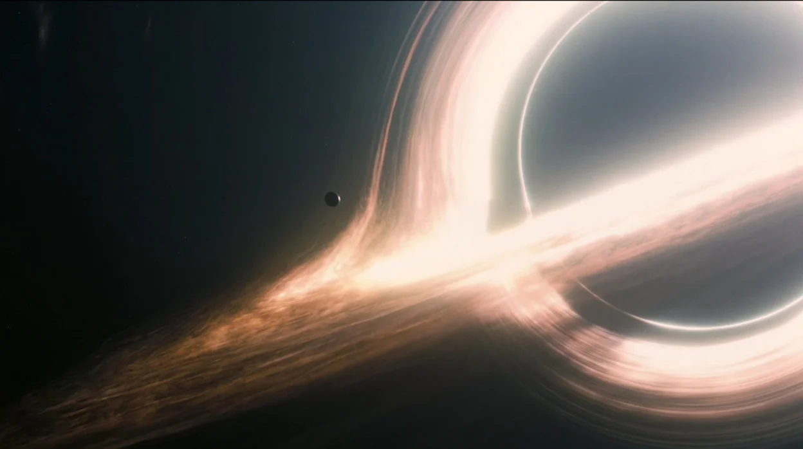

Los agujeros negros se encuentran entre los objetos cósmicos más misteriosos, han sido muy estudiados, pero no del todo comprendidos. Investigación de Cultura Digital II sobre física relativista y distorsión espacio-temporal.
Unidad Educativa: CETis No. 20
Asignatura: Cultura Digital II
Docente: Gladys Aurora Guzmán Ramón
Alumno: Christopher Daniel Torres Sanchez
Grupo: 2° CV | Turno: A
Lugar: Ciudad del Carmen, Campeche
Un agujero negro no es un espacio vacío, sino una enorme cantidad de materia concentrada en un área extremadamente pequeña (llamada singularidad). Esto genera un campo gravitatorio tan colosal que la velocidad de escape requerida supera la velocidad de la luz. En el marco de la asignatura Cultura Digital II, abordamos este misterio utilizando herramientas digitales y simuladores interactivos para visualizar y comprender conceptos abstractos de la relatividad general de Albert Einstein de una manera accesible y visual.
Tu cuerpo sería estirado como un hilo en un proceso conocido como espaguetificación debido a que la gravedad tira más fuerte de tus pies que de tu cabeza. Finalmente, cruzarías el horizonte de sucesos y te desintegrarías.
Si un observador externo te viera caer hacia el interior de un agujero negro, notarías tres fases fundamentales explicadas por la física moderna:
Al aproximarte, la diferencia de gravedad entre las partes de tu cuerpo se vuelve radical. Si caes de pies, la atracción en ellos será miles de veces mayor que en tu cabeza, estirándote verticalmente y comprimiéndote horizontalmente como un espagueti antes de tocar el borde físico.
De acuerdo con la teoría de la Relatividad, el tiempo transcurre más lento cerca de una masa colosal. Para un amigo que te observa desde una nave espacial segura, vería que tu caída disminuye su velocidad progresivamente y que tu cuerpo se congela para siempre justo en el borde, tornándose de un color rojo oscuro debido al desplazamiento al rojo gravitacional.
Este es el "punto de no retorno". Una vez que cruzas este umbral cuántico, el espacio-tiempo se curva tanto que todas las trayectorias posibles apuntan única y exclusivamente hacia el centro. Para ti, el tiempo continuará "normalmente" por unos milisegundos hasta llegar a la singularidad, donde las leyes de la física conocidas dejan de existir.
Interactúa con las fases para recalcular la curvatura de la luz:
El disco de acreción gira firmemente. El lente gravitacional curva las estrellas de manera simétrica.
La gravedad comprime la luz. El tiempo parece detenerse en el borde cuántico.
Violentas fuerzas de marea estiran los elementos a nivel atómico.

La respuesta al problema demuestra que ser absorbido por un agujero negro resultaría en la desintegración total. Este análisis refuerza el uso de Cultura Digital para modelar mediante simuladores virtuales fenómenos cósmicos extremas.